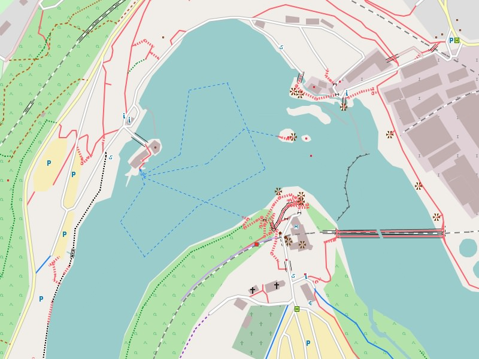
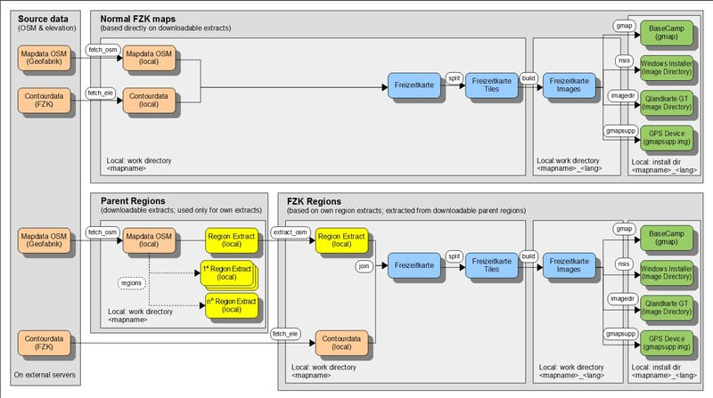
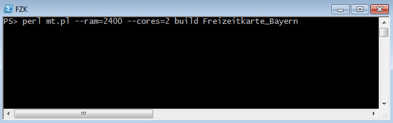

Jedermann ist herzlich eingeladen seine eigene Karte zu erstellen. Dies kann unter folgenden Aspekten interessant sein:
- Aktualität
Es ist möglich, jederzeit eine "neue" Karte aus "tagesaktuellen" OSM-Daten zu erzeugen. Hierzu sind die OSM-Daten aus dem Internet zu laden und die Karte ist neu zu bilden. Alle hierzu erforderlichen Ablaufschritte werden durch verschiedene Aufrufe des Perl-Programmes "mt.pl" vereinfacht. - Inhalt
Über den Inhalt definieren sich die Objekte (Flächen, Linien, POIs) die auf der Karte in den verschiedenen Vergrößerungsstufen jeweils zur Anzeige kommen. In den Freizeitkarten vorhandene Standardobjekte können entfernt oder individuelle Elemente können hinzugefügt werden. Dies gilt für nahezu alle Elemente des OSM-Datenbestands. Die Definition der Objekte erfolgt im wesentlichen in den drei Styledateien "polygons", "lines" und "points". Die Bearbeitung dieser Dateien erfolgt mit einem Standard-Texteditor. Umfangreiche Kommentare in den Styledateien erleichtern den Einstieg in das Thema. - Design
Das Design legt das optische Erscheinungsbild der Karte fest. Hierbei kann jedes Objekt in der Darstellung beeinflußt werden. Bei Flächen ist dies z.B. die Farbe, bei Linien z.B. die Breite und bei POIs das Darstellungsicon. Das Erscheinungsbild wird in einer binären TYP-Datei festgelegt, die mit einem speziellen Editor bearbeitet werden kann (z.B. TYPViewer für Windows).

Seit ca. 15.000 Jahren: Der Rheinfall in Schaffhausen ist mit weitem Abstand der größte Wasserfall Europas. Im Sommer stürzen auf 150 Metern Breite im Mittel 600.000 Liter Wasser pro Sekunde 23 Meter in die Tiefe.
Die Aspekte "Inhalt" und "Design" stehen in enger Wechselwirkung zueinander. Soll z.B. ein neues Objekt auf der Karte angezeigt werden, so ist dieses Objekt sowohl inhaltlich als auch vom Erscheinungsbild zu definieren.
Workflow zur Erstellung einer Freizeitkarte
Der Workflow in der Entwicklungsumgebung ist je nach Art der herzustellenden Karte unterschiedlich. Wir unterscheiden grundsätzlich zwei Arten:
-
Karten auf Basis von bestehenden OSM Daten Extrakten
Bei diesem Kartentyp existieren fertige Extrakte vom gewünschten Gebiet auf geofabrik, das heisst wir bauen vereinfacht nach dem folgenden Schema:
- Einmaliges Komplettieren der Entwicklungsumgebung: zuladen der sogenannten boundaries (bootstrap)
- Herunterladen der OSM Daten für die gewünschte Karte und der dazugehörigen Höhenlinien (fetch_*)
- Zusammensetzen der OSM Daten und der dazugehörigen Höhenlinien (join)
- Aufteilen der Gesamtdaten in Kacheln oder sogenannte Tiles (split)
- Kompilieren der Karte (build)
- Bauen der Kartenversionen für GPS, BaseCamp, usw (gmap, nsis, imagedir, gmapsupp)
-
Karten für die wir in der Entwicklungsumgebung die Region zuerst zuschneiden müssen
Bei diesem Kartentyp existieren keine fertigen Extrakte vom gewünschten Gebiet auf GeoFabrik, darum müssen wir ein grösseres Gebiet als das eigentlich gewünschte herunterladen (in den meisten Fällen ganz Europa) und selbst zuschneiden. Bei diesem Kartentyp bauen wir vereinfacht nach dem folgenden Schema:
- Einmaliges Komplettieren der Entwicklungsumgebung: zuladen der sogenannten boundaries (bootstrap)
- Herunterladen der OSM Daten für übergeordnete Gebiet, im Normalfall ganz Europa (fetch_osm)
- Zuschneiden des übergeordneten Gebiet auf die gewünschte Grösse, DEU+ zum Beispiel (extract_osm)
- Herunterladen der Höhendaten direkt für das gewünschte Gebiet, DEU+ zum Beispiel (fetch_ele)
- Zusammensetzen der OSM Daten und der dazugehörigen Höhenlinien (join)
- Aufteilen der Gesamtdaten in Kacheln oder sogenannte Tiles (split)
- Kompilieren der Karte (build)
- Bauen der Kartenversionen für GPS, BaseCamp, usw (gmap, nsis, imagedir, gmapsupp)
Überblick über den Workflow für beide Karten Typen

Bedienung
MapTool (mt.pl):
Ruft man das Utility "mt.pl" (MapTool) ohne Argumente auf, wird folgender Hilfetext ausgegeben:
$ perl mt.pl
mt.pl - Map Tool, 1.3.19 - 2022/05/14
Usage:
perl mt.pl [--ram=<value>]
[--cores=<value>]
[--ele=<value>]
[--typfile="<filename>"]
[--style="<dirname>"]
[--language="<lang>"]
[--unicode]
[--ntl="<name-tag-list>"]
[--downloadbar]
[--downloadspeed=<value>]
[--continuedownload]
[--dempath=<path>]
<Action>
<ID> | <Code> | <Map>
[PPO] ... [PPO]
Terminal / Kommandofenster:
- die Arbeitsschritte zur Erzeugung einer Karte erfolgen über ein Terminal
- hierzu sind die einzelnen Kommandos manuell im Terminal einzugeben
- oder alternativ können entsprechende Batchdateien erstellt werden
- das Windows-Synonym für Terminal lautet oft auch "Kommandofenster"

Vorbedingungen:
- Perl (5.10 oder höher) muß installiert sein
- Java (1.8 oder höher) muß installiert sein
- mindestens 2 GB Hauptspeicher
Empfehlungen zur Erzeugung einer Karte für ein Bundesland:
- siehe Vorbedingungen
- Standardeinstellungen
Empfehlungen zur Erzeugung einer Karte für Deutschland:
- leistungsstarke Mehr-Kern-CPU
- Java-Virtual-Machine mit 64bit
- je benutztem Prozessorkern sollte mindestens 2 GB RAM zur Verfügung stehen
Anmerkung:
- der Einstieg in die Kartenentwicklung sollte mit einer möglichst kleinen Karte erfolgen
- der Buildprozeß der Deutschlandkarte dauert bei Verwendung von 4 CPU-Kernen circa 45 Minuten
- weitere Informationen zur Entwicklungsumgebung finden sich in der Datei "readme.txt"
- die Entwicklungsumgebung ist lauffähig unter macOS, Windows und Linux
- unter 64-Bit Linux-Systemen muss die Unterstützung für 32-Bit Programme installiert sein
- für das Erstellen des Windows-Installers unter Linux muss das NSIS (Nullsoft Scriptable Install System) Paket installiert sein
Schalter: In den Kartenstyles sind einige logische Schalter (bedingte Übersetzung) eingebaut, die aktiviert werden können:
- WINTERSPORT: Darstellung von Linien für Wintersportaktivitäten (Pisten, Loipen, ...) [lines-master]
- EXTENDEDROUTING: Routing auch über (Berg-)Wanderwege der Klassen T4-T6 [lines-master]
- TRIGMARK: Darstellung von Trigonometrischen Markierungen [points-master]
- DRINKINGWATER: Darstellung von Trinkwasserstellen [points-master]
- KULTURLAND: Darstellung von Ackerflächen [polygons-master]
Freizeitkarte Entwicklungsumgebung
Zusatzinformation
Die Datei mit der Entwicklungsumgebung liegt unter dem Namen fzk‑mde‑garmin‑LATEST.zip auf github zum Herunterladen bereit. In der ZIP Datei ist das Verzeichnis
Freizeitkarte‑Entwicklung in einem zusätzlichen Verzeichnis mit dem Namen fzk‑mde‑garmin‑Latest verpackt.